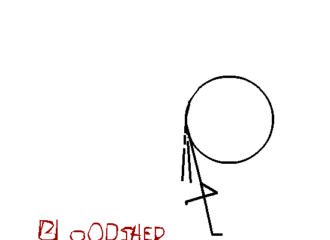

Stupid and comical violence with stickmans.
Website inspired by
https://stickdeath.nekoweb.org/home.html
Teh Skater (Flash Version)
Don't have the Ruffle extension? Download it here:
OR watch the animation in MP4:
Your browser does not support the video tag.